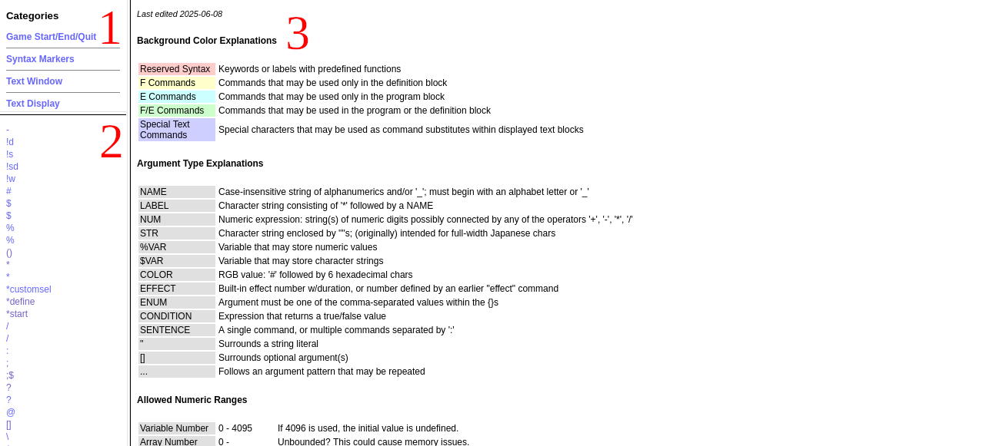
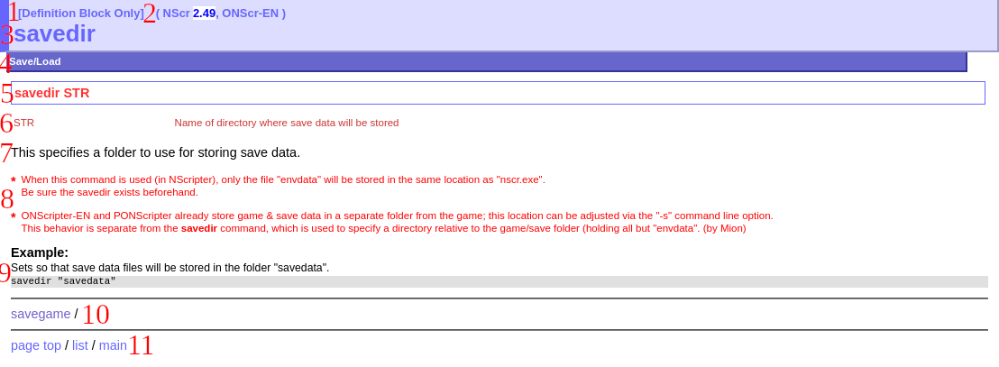

ONScripter-EN full guide: 0 - Informations additionnelles
Bienvenue !
Avant que vous ne commenciez à lire, sachez que ce guide n'a pas pour intention d'être pour de complets débutants, il est possible de lire ceci plutôt que le guide de démarrage rapide si vous le souhaitez vraiment. Bien que tous les fondamentaux de l’utilisation du moteur seront abordés, comme dans les deux guides de démarrage rapide, Il y aura beaucoup plus de théories et de discussions, et un rythme plus lent par dessus, se rapprochant plus d'un livre qu'un tutoriel textuel - mais si c'est votre truc, cela vous mênera à une compréhension plus détaillée et nuancée.
Cela étant dit, ce guide n'est pas exhaustif. Pour une compréhension complète du moteur, ses capacités, et comment les exploiter, vous devrez vous familiariser avec la référence API. De plus, il vous faudra accumuler de l'expérience, que cela soit en s'inspirant ou en travaillant sur des jeux existants, ou en faisant le votre.
Cependant, ce kit de développement dans son ensemble vise à vous fournir les éléments dont vous pourriez avoir besoin, nommé (1) un guide structuré, (2) bonne documentation de référence, et (3) le matériel requis pour utiliser et expérimenter avec le moteur. Tout ce qui manque est votre motivation.
Comparaison à des moteurs similaires
Avec un peu de lecture, vous saurais maitenant depuis l'introduction générale qu'ONScripter-EN descend d'ONScripter, qui a son tour est basé sur NScripter. Cependant, je vais vous présenter ici une brève comparaison d'ONScripter-EN avec les autres moteurs de la même famille, ainsi vous comprendrez que la niche qu'il remplie et comment il excelle au dessus du reste, spécialement depuis 2023. Vous verrez que, pour un projet non japonais (et même pour beaucoup d'autre), ONScripter-EN est le choix par défaut. ONScripterYuri avait quelques fonctionnalités et attraits intéressants, et qu'il est le réel concurrent à ONScripter-EN pour 99% des nouveaux projets.
| Nom | Niche | Status |
|---|---|---|
| NScripter | L'original; Moteur de visual novel de l'ancienne école. Code source non disponible | Abandonné (?) depuis 2018, Disponible unique sur Windows |
| ONScripter | Open-source, cross-platform | Développement arrêté, support de l'anglais pauvre, derrière ONScripter-EN en fonctionnalté |
| PONScripter | Support des polices proportionnelles (principalement) | Abandonné depuis 2011; Support des polices proportionnelles actuellement dans ONScripter-EN |
| ONSlaught | Reconstruction complète de zéro avec SDL2 | Abandoné depuis 2015, API médiocre (mais reste utilisable) |
| ONScripter-RU | Support de jeux spécifiques, notamment Umineko | À ne pas utiliser pour d'autres projets |
| ONScripterYuri | Réamélioration d'ONScripter; web, LUA, SDL2, UTF-8 | Actif; quelques fonctionnalités intéressantes, mais pas autant qu'ONScripter-EN à d'autres égards et lui manque la simplicité & la continuité d'ONScripter-EN |
| Beaucoup d'autre | Une variété de modifications d'ONScripter à travers les années, souvent pour ajouter le support d'une langue ou une fonctionnalité | Plusieurs états (souvent dans l'abandon), mais peu à pas de support |
| ONScripter-EN | L'historique version anglaise, avec un support continue & récemment plus de fonctionnalités de modernisations (sans sacrifier la rétrocompatibilité complète) | Actif, supporté, et bien documenté |
Citation
"L'intégralité de la syntax pourrait être considérée comme un bug: il est peu pratique, inconsistent, et inutilement difficile à parcourir. Ne me blamez pas: je ne l'ai pas designé, je le documente juste."
"L'entièreté du design de l'interpréteur est sans équivoque un bug"
- Un employé de Sekai Project, à propos de PONScripter (puis traduit par THMprod)
Utiliser la référence d'API
Lorsque vous en aurez fini avec ce guide, vous serez familiarisé avec la référence d'API (regardez la page "resources"). C'est le manuel de référence pour le langage de programation (NScript) avec lequel les jeux NScripter et moteurs dérivés sont écrit. Observez:
Image

- Catégorie de la commande
- Liste de toutes les commandes
- Fenêtre principale, montre les commandes et d'autres informations, incluant des informations générales, de syntaxes, et des paramètres
Image

- L'emplacement où la commande peut être utilisée (bloc de définition, bloc programme, les deux)
- Quel moteur (et version du moteur) supporte la commande
- Nom de la commande
- La catégorie de la commande
- Le nombre et le type de l'"argument" (paramètres) que la commande accepte
- Une description de l'utilité et de l'usage de chaque commande
- Description de la commande
- Notes de mainteneur concernant un usage niche ou des points préoccupants
- Examples d'usage
- Commandes liées
- Lien général.
Astuce
Lisez la satanée référence API !!!
Division of the guide
As you can tell from the contents page, this guide is higly structured. This is a good thing, not bad - it should make it easier to find relevant information and give you a clear idea of where you are in the guide.
Before we begin, we will cover the internals and externals of the engine; those being (1) the associated game files in more detail than before, (2) the setup and operatin of the engine, leading into (2) the syntax of the NScript language, and (4) the structure of game scripts, after which everything external to the engine and also the topics peripheral to working with the internals of the engine (syntax and structure) should have been at least touched upon, allowing us to proceed in detail with the various internal functions of the engine.
Then firstly, we will briefly touch on images and backgrounds, allowing us to cover basic usage of commands in-context and produce visible output, letting us discuss (and test with immediately visible results) more of the backend code.
Secondly, we will discuss labels, variables, and conditionals, allowing us to manipulate stored data values and the flow of the interpretation of scripts, introducing fundamental structures such as subroutines and loops.
Thirdly, we will use this new solid understanding of the interpretation of scripts to begin introducing useful features properly, beginning with text display, the most fundamental feature of a novel game to the user, going into detail on text-display-related features and their correct and effective usage.
Fourthly, we will cover choices and buttons in their various forms, allowing for the implementation of user interaction besides simply advancing text.
Fifthly, we will cover audio including BGM, SFX, and voicelines, comparing the commands and uses for the different audio formats, including coverage of legacy formats.
Sixthly, we will cover more meta-gameplay concepts, namely menus and engine modes.
Seventhly, we will touch on other noteworthy and modern (post-2023) features: alternative text display modes, video playback, custom & variable screen resolutions, UTF-8, and proportional fonts.
Eighthly and finally, we will discuss the post-production topics of archive formats, compression, packaging and distributing games.
As a final note, I bring to your attention again that even this is not a complete guide to everything the engine has to offer, either in the commands it provides or how they can be used in interesting ways.